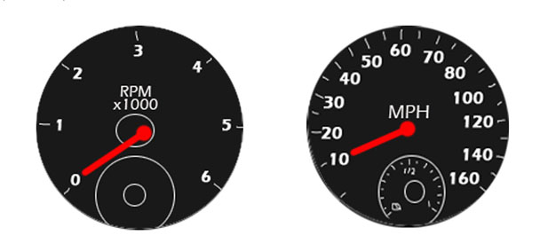
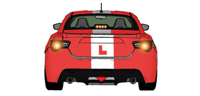
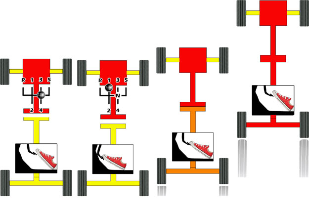

From the outset, be clear that the left foot is to be used exclusively for the clutch
The right foot can move or pivot between the accelerator and the footbrake
Accelerator (Gas)
Controls the air/fuel flow to the engine.
More gas=more power
Use right foot, gentle pressure
Engine speed shown by rev counter in Revolutions Per Minute (RPM)
Car speed shown by speedometer in Miles Per Hour (MPH)

Brake (Footbrake)
Slows and stops the car
Operates on all four wheels
Always check the mirrors before using the brake
Use progressively, ie gently increasing and decreasing pressure as required

Brake lights show when pressed. They are very bright so as to be noticeable. In queued traffic it can be courteous to apply the handbrake instead of the footbrake so that the following driver isn't dazzled.
Clutch
Breaks the link between the engine and the wheels
Depress fully to change gear
Tease biting point to move slowly (clutch control)
Using the clutch to set off:

-Engine On -Clutch down -Clutch up to -Clutch
-Clutch off -Into first gear 'biting point' off
-Neutral